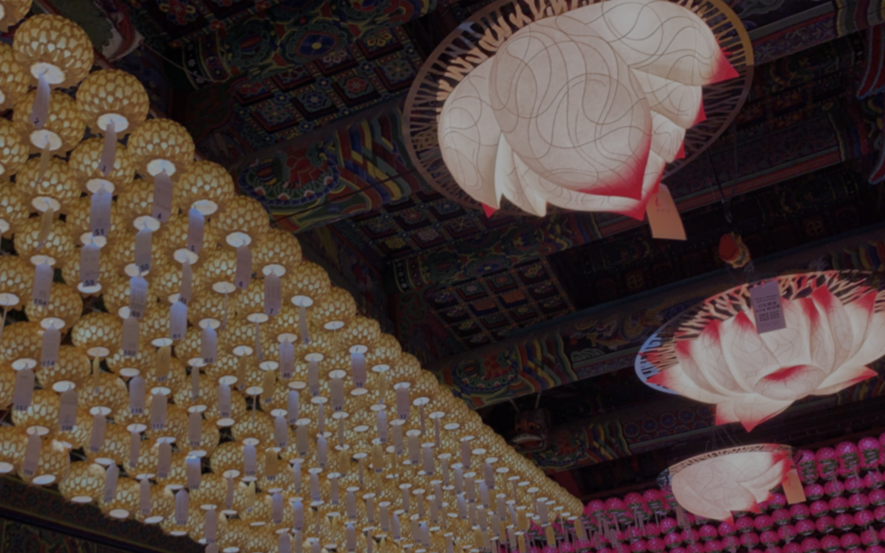

도심 속에서의 기도
봉은사

봉은사 내의 건물들의 위치를 한눈에 보여드립니다.
대표적으로 법왕루, 미륵대불, 대웅전을 먼저 둘러보시는 것을 추천드립니다.

1. 서래원(불교용품점)
2. 진여문
3. 종루
4. 연회루(연회다원)
5. 화장실
6. 법왕루
7. 전통문화체험관(1관)
8. 전통문화체험관(2관)
9. 미륵대불
10. 3층석탑
11. 대웅전

봉은사의 각종 아름다운 사진들을 보여드립니다.
봉은사 미륵대불
용화정토 원불 봉안 불사
연회루
연회다원 카페
보물 제 1819호
봉은사 목조석가여래 삼불좌상
수도산 봉은사
종루 범종
봉은사에서 도보 3분 거리에는 다양한 볼거리가 있는 코엑스가 있습니다.
별마당도서관
총 7만여 권의 장서를 갖춘 총 2,800㎡의 공간
아쿠아리움
650어종의 물고기를 온 가족이 함께 즐길 수 있는 곳
메가박스
14년 연속 관객 수 4백만 이상 국내 최대 시네마
봉은사로 오시는 길을 소개합니다.